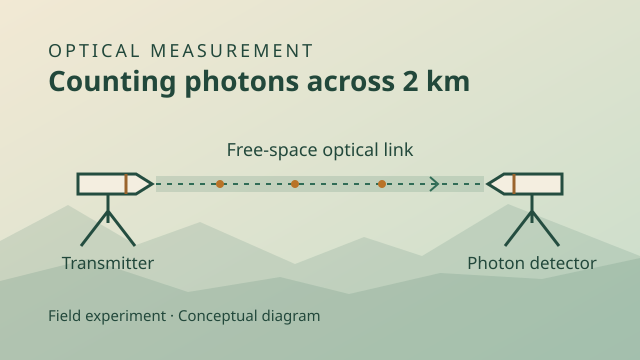
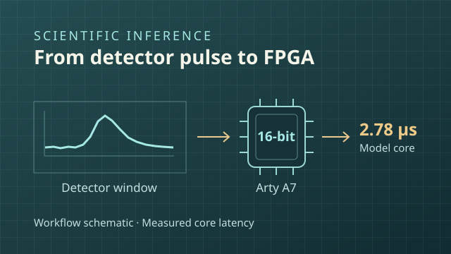

From designing optical devices to validating inference on hardware, these projects explore how to measure and interpret weak physical signals.
Selected research
Northeastern University · M.S. thesis · 2024
Engineering Supermodes of Coupled Resonator Arrays
I modeled coupled ring-resonator arrays and used Fourier-domain perturbations and numerical optimization to target spectral shifts while limiting changes to neighboring modes. The simulations explored spectral control for nonlinear photonic devices and compensation for resonator disorder.
Thesis Figure 1.2 · Simulated drop-port spectrum of a ten-ring chain. View full-size figure ↗
QuantumCTek · Field experiment · 2023
Photon Counting on a Free-Space Optical Link
I worked on calibration for a polarization-encoded quantum communication link. I aligned the optics, characterized the photon-counting signal and background, and documented the configuration and stability of a 2 km outdoor link test.

Conceptual view of the transmitter, outdoor path, and photon-counting receiver.
Independent study · Public CUORE data
Detector Waveform Inference on FPGA
I audited 10,000 waveform windows for exact overlap and used group-aware splits to study evaluation leakage. I tested compact classifiers under registration shifts and fixed-point quantization.
On an Arty A7-100T, a 16-bit hls4ml MLP matched C simulation bit for bit across 1,350 validation events. On-board counters measured a model-core latency of 2.78 µs.
16-bit fixed point
1,350 validation events
2.78 µs model-core latency

Inference workflow. The pulse is illustrative; the latency is the measured model-core result.
Massachusetts Institute of Technology · 2024–2025
Gravitational-Wave Parameter Estimation
I contributed preprocessing, resampling, and parameter-constraint modules to Bilby and AMPLFI workflows and evaluated how those choices affected computation and robustness.
Earlier & adjacent work
Radio astronomy · 2021–2022
Milky Way Rotation from the 21 cm Hydrogen Line
I processed neutral-hydrogen spectra to estimate line-of-sight velocities and compared the resulting rotation curve with models of luminous matter and a dark-matter halo.
I analyzed switching and endurance measurements for more than 500 samples and compared how ruthenium and tungsten-oxide structures behaved over repeated cycles.
Caltech undergraduate research project · 2021
Gravitational Wave Data Analysis
I explored how to identify weak signals in public LIGO data using frequency-domain filtering, waveform-template matching, and Bayesian ranking concepts.
Northern Arizona University · Capstone · 2021–2022
Greenhouse Monitoring and Control System
I led the design of an IoT system that monitored temperature, soil moisture, and illumination and automated greenhouse controls using Arduino and PostgreSQL.
UnionGPT · Research software
Research Software for Archival Work
I designed a workflow for organizing source notes and archival metadata, then built evaluation cases to check which materials supported generated answers.